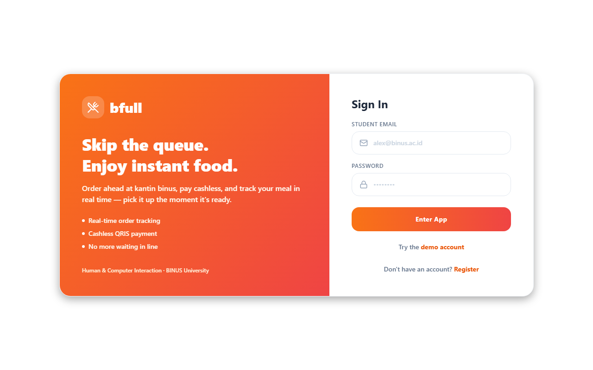
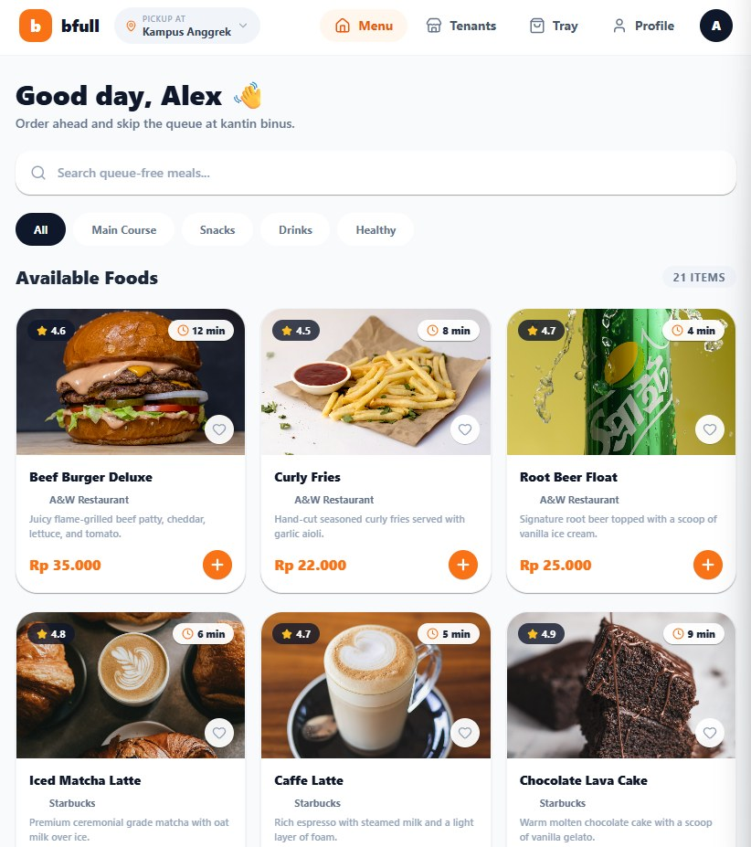
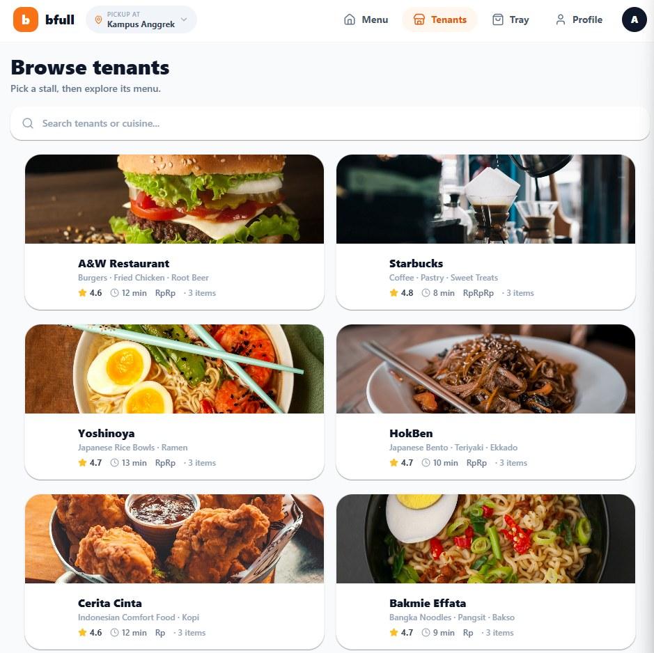
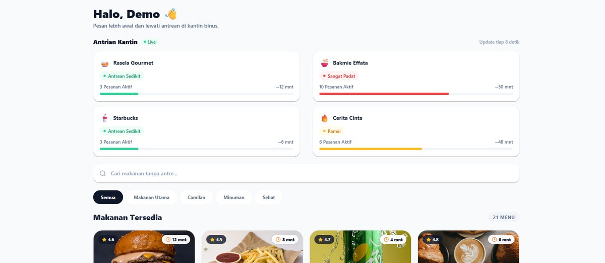
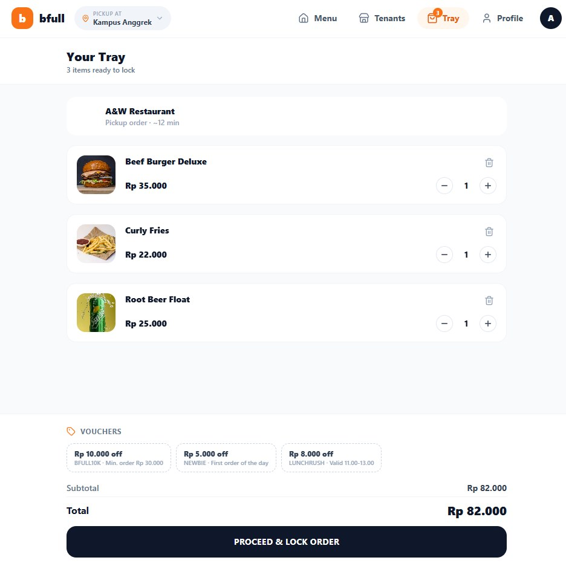
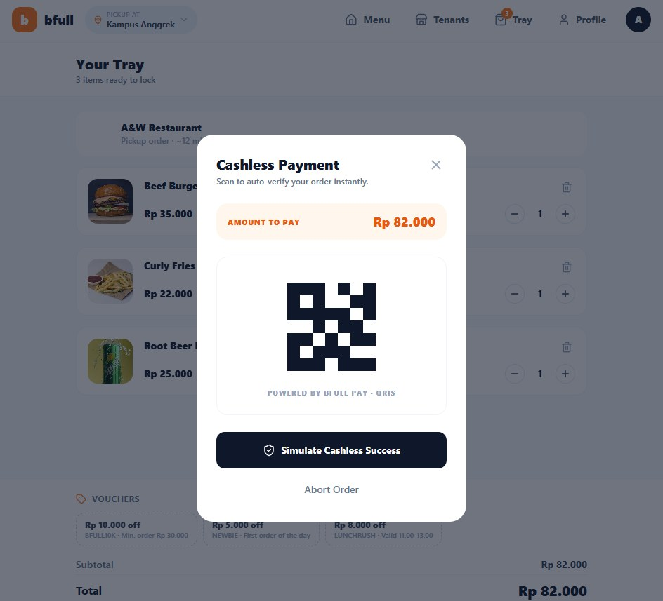
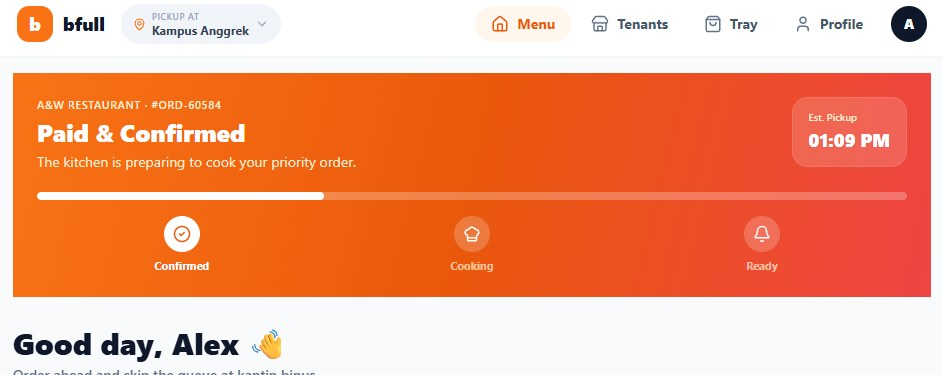
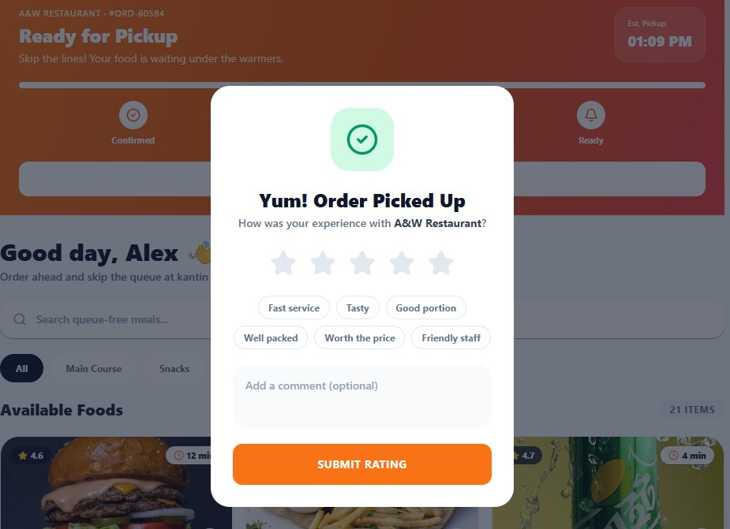
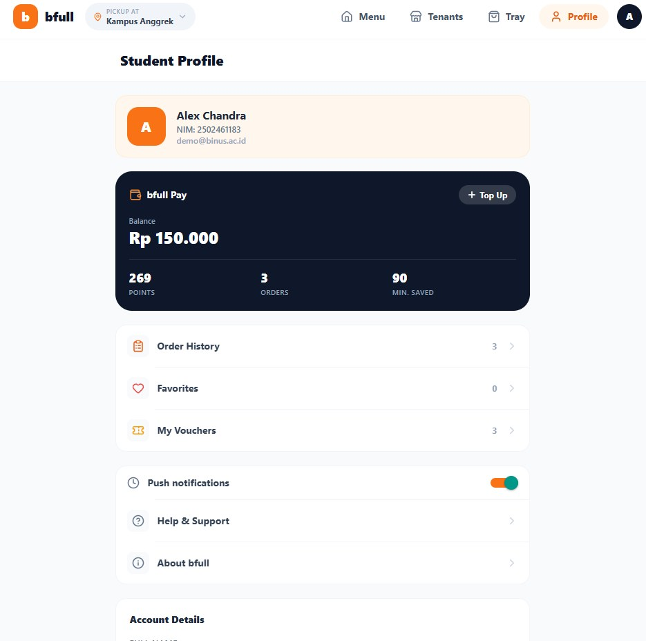

Aplikasi web dan mobile
bfull — Pesan Makanan Kantin BINUS
Prototipe aplikasi untuk memesan makanan di kantin BINUS tanpa mengantre. Mahasiswa memilih tenant, memesan lewat aplikasi, membayar nontunai, lalu memantau pesanannya sampai siap diambil. Dibuat untuk mata kuliah Human and Computer Interaction.
Coba aplikasinya Lihat kode di GitHub
Untuk mencoba, tekan tombol akun demo di halaman masuk, atau pakai email apa pun yang berakhiran
@binus.ac.id.
- 1kode untuk web dan Android
- 20mahasiswa penguji
- 4,8/5kepuasan penguji
- 8–12menit hemat, perkiraan penguji

Masalah
Waktu istirahat di antara kelas hanya sekitar 20 sampai 30 menit, dan hampir semua mahasiswa istirahat di jam yang sama. Akibatnya kantin penuh, waktu habis untuk mengantre dan menunggu makanan dimasak, dan pembeli sering baru tahu menu favoritnya habis setelah sampai di depan kasir.
bfull memindahkan pemesanan ke aplikasi: lihat keramaian setiap tenant, pesan dari mana saja, bayar nontunai, lalu datang ke tenant hanya saat makanan sudah siap. Pengguna utamanya mahasiswa dengan jadwal padat, ditambah dosen dan staf yang enggan berdesakan di jam makan siang.
Proyek ini tugas kelompok, tetapi seluruh perancangan dan penulisan kodenya saya kerjakan sendiri.
Alur pengguna
- MasukDengan email
@binus.ac.id, lalu memilih salah satu dari delapan kampus. - Memilih makananLewat daftar tenant, atau lewat daftar menu dengan pencarian dan filter kategori. Setiap menu bisa diberi catatan untuk penjual.
- KeranjangMemakai voucher potongan harga. Total berubah langsung saat jumlah diubah.
- MembayarPembayaran nontunai dengan QRIS.
- Memantau pesananTiga tahap: dikonfirmasi, dimasak, siap diambil.
- MenilaiBintang, tag cepat, dan komentar setelah pesanan diambil.
Tampilan aplikasi
Screenshot versi web, mengikuti urutan alur di atas.








Keputusan desain
Satu tenant per keranjang
Setiap tenant memasak dan menyerahkan pesanannya sendiri. Kalau satu keranjang boleh berisi beberapa tenant, mahasiswa harus menjemput di beberapa tempat dengan waktu siap yang berbeda. Karena itu keranjang dibatasi satu tenant. Saat pengguna menambah menu dari tenant lain, aplikasi meminta konfirmasi dulu, bukan diam-diam mengosongkan keranjang.
Papan antrean sebelum memesan
Beranda menampilkan keramaian setiap tenant dengan label dan warna: sepi, antrean ringan, ramai, atau sangat ramai. Perkiraan waktu tunggu dihitung dari panjang antrean dikali rata-rata waktu per pesanan di tenant itu. Dengan begitu mahasiswa bisa memilih tenant yang lebih sepi sebelum memesan.
Keterlambatan diberitahukan, dan pengguna yang memilih
Kalau kantin lebih ramai dari biasanya, aplikasi memberi tahu bahwa pesanan akan terlambat, lengkap dengan jam siap yang lama dan yang baru. Pengguna lalu memilih: tetap menunggu atau membatalkan pesanan.
Tampilan mengikuti perangkat
Di browser, aplikasi memakai menu atas dan tata letak beberapa kolom. Di ponsel, memakai tab bawah yang mudah dijangkau jempol. Keduanya berasal dari satu kode yang sama.
"Tray", bukan "Cart"
Tempat menampung pesanan dinamai Tray (nampan), bukan Cart (keranjang belanja) seperti di toko online. Nampan adalah benda yang memang dipakai membawa makanan di kantin, jadi pengguna langsung paham fungsinya tanpa perlu menebak.
Tombol bayar tidak muncul saat Tray kosong
Kalau Tray dibuka sebelum ada menu yang ditambahkan, halaman hanya menampilkan status kosong dan tombol untuk kembali ke daftar menu. Tombol pembayaran sengaja disembunyikan, supaya pengguna tidak bisa memulai transaksi tanpa pesanan.
Akun demo di halaman masuk
Penguji dan dosen bisa langsung mencoba dengan satu tombol, tanpa perlu mendaftar dulu.
Pengujian pengguna
Prototipe diuji oleh 20 mahasiswa BINUS: 11 lewat laptop dan 9 lewat ponsel, masing-masing sekitar 3 sampai 10 menit. Penguji hanya diberi penjelasan singkat, lalu diminta masuk, memilih menu, mengisi Tray, membayar dengan QRIS, dan melacak pesanan tanpa panduan tambahan. Setelah itu mereka mengisi kuesioner skala 1 sampai 5.
| Pernyataan | Rata-rata (1–5) |
|---|---|
| Bisa memakai aplikasi tanpa petunjuk tambahan | 4,75 |
| Alur dari masuk sampai melacak pesanan terasa logis | 4,45 |
| Tampilan nyaman dan tidak membingungkan | 4,45 |
| Kepuasan keseluruhan | 4,80 |
| Bersedia memakai kalau diterapkan di kantin BINUS | 4,80 |
Sebanyak 11 penguji memperkirakan aplikasi ini menghemat 8 sampai 12 menit waktu istirahat, dan 5 lainnya lebih dari 12 menit. Lebih dari 90% penguji menyelesaikan semua tugas tanpa kendala. Satu penguji sempat bingung di halaman Tray, tetapi tetap bisa menyelesaikan pembayaran.
Masukan terbanyak: pembayaran langsung lewat dompet digital seperti GoPay tanpa keluar aplikasi, informasi gizi di setiap menu, dan layanan antar ke kelas.
Pengujian ini dilakukan bersama kelompok. Pengujinya sedikit dan direkrut sendiri, dan skornya berasal dari penilaian penguji, jadi hasilnya lebih tepat dibaca sebagai umpan balik awal daripada ukuran kegunaan yang ketat.
Teknologi
- Expo SDK 56 dan Expo Router untuk navigasi berbasis file.
- React Native 0.85, React 19, dan TypeScript.
- NativeWind v4, yaitu Tailwind CSS untuk React Native.
- AsyncStorage, sehingga keranjang, riwayat, dan favorit tetap ada setelah aplikasi ditutup.
- GitHub Actions yang menerbitkan ulang versi web setiap ada push ke branch utama.
Keterbatasan
- Ini prototipe untuk tugas kuliah, belum terhubung ke kantin sungguhan.
- Menu, tenant, dan antrean memakai data contoh di dalam kode. Angka antrean berubah acak setiap 8 detik untuk meniru data langsung.
- Status pesanan maju otomatis berdasarkan waktu, bukan dari penjual.
- Pembayaran QRIS hanya tampilan, tanpa transaksi sungguhan.
- Data pesanan tersimpan di perangkat masing-masing, sehingga tenant tidak bisa melihatnya. Versi sungguhan butuh server bersama.
Pelajaran dari proyek ini
- Memusatkan prototipe awal pada alur inti (memilih menu, membayar, melacak pesanan), lalu baru membuat halaman pendukung seperti profil dan voucher setelah alur inti tervalidasi.
- Lebih banyak iterasi di Figma sebelum menulis kode, karena mengubah tata letak di desain jauh lebih cepat daripada di kode.
- Menguji aplikasi langsung di kantin saat jam sibuk. Masalah utamanya adalah waktu yang mepet di tengah keramaian, dan kondisi itu tidak muncul saat pengujian di tempat yang tenang.
- React Native
- Expo
- TypeScript
- NativeWind
- AsyncStorage
- GitHub Actions